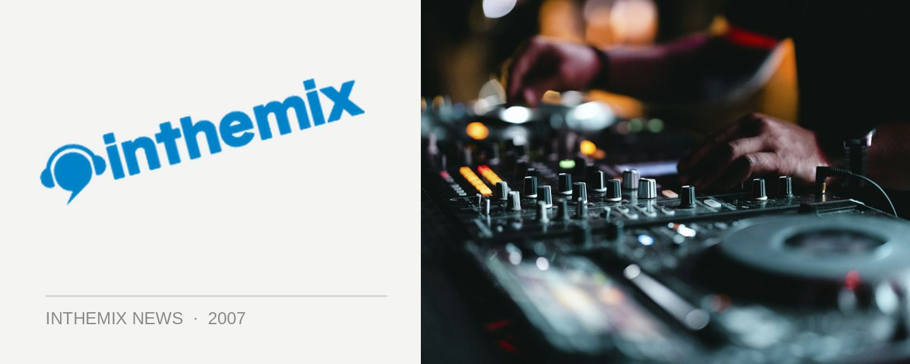

Trance reclaims the main room at Sublime
After a brief flirtation with adding electro and house to the main room roster, Australia’s longest running club night Sublime will be putting trance back in the spotlight as its main music policy, to be accompanied buy some other tweaks to its formula. The organisers are promising 100 per cent trance over the course of an evening in Voodoo, but all the different flavours of the sound: be it hard, tech, progressive or euphoric trance, you’ll be hearing it on the main floor of Sublime.
In other developments, Suburbanite will remain on the rooftop while the Go-Beat! mashup house and electro will be shifted to The Box. Meanwhile, the Young Guns crew will be taking over the Icon Room for a new era of the ‘hard stuff’.
Resident DJs Scotty G, Slim, Shadower, Arbor, S Dee, Toxic, Nitrouz, Spank, E Tek and Spin have proved incredibly popular so they’ll be taking the reigns in the newly redesigned Icon Room, with a brand new DJ set up and a dance floor that is second in size only to the main room in Home.
Check it out this Friday night as Sublime gears up for the summer! And stay tuned to ITM for news of special guests and other tasty announcements.